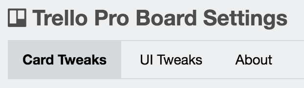

Pro for Trello was just added to Chrome!
Congrats! You just made the first step towards being a real Pro for Trellofessional.
HOW TO USE
1. Look for the "Pro4Trello" option to your right:

2. Configure tweaks for the current board only:

3. Enjoy an awesome Trello experience!